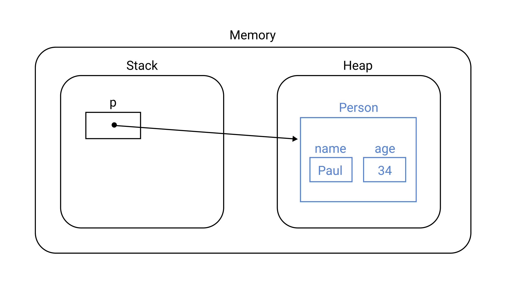
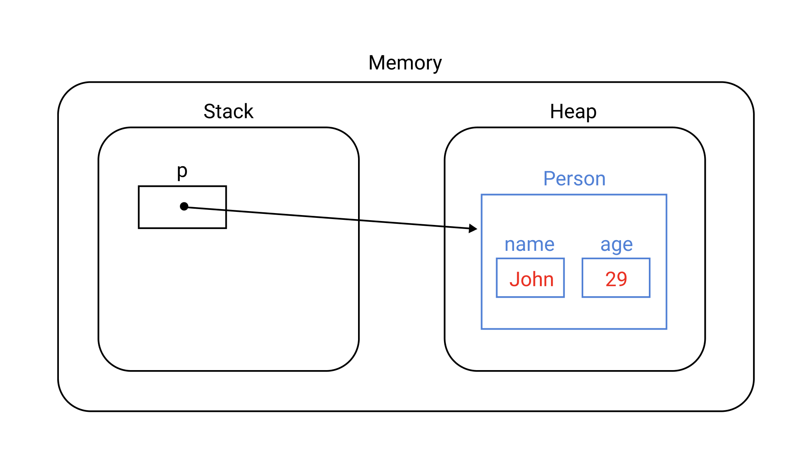
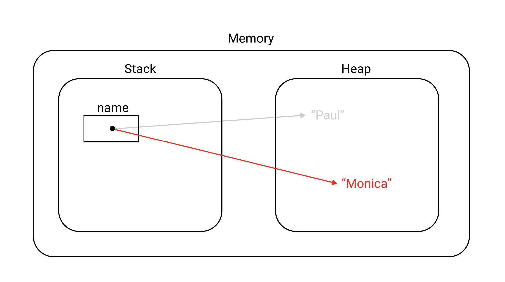

[Java] Mutable과 Immutable
Mutable Object
객체 지향 프로그래밍에서 Mutable Object는 생성 후 상태를 바꿀 수 있는 객체를 의미한다.
Java에서는 String클래스와 Wrapper클래스를 제외한 대부분의 객체가 Mutable하다.
예제를 살펴보자. 다음과 같이 객체를 생성하면
1 | // 객체 생성 |
메모리 상에서의 객체 상태는 다음과 같다.

객체의 상태를 변경하면
1 | // 상태 변화 |
메모리 상에서의 객체 상태는 다음과 같이 변한다.

이처럼 Mutable Object은 객체를 생성한 후 상태를 바꿀 수 있는 객체를 의미한다. List, Set, Map 같은 Collection객체도 Mutable Object에 포함된다.
1 | // 객체 생성 |
Immutable Object
객체 지향 프로그래밍에서 Immutable Object는 생성 후 상태를 바꿀 수 없는 객체를 의미한다.
Java에서 String은 대표적인 Immutable Object다. 예제를 살펴보자.
1 | String name = "Paul"; |
객체를 변경하고 있다고 생각할 수 있다. 하지만 위 코드는 객체를 변경하는 것이 아니라 새로운 객체를 생성한 후 참조값을 변경하는 것이다.

이러한 점에서 String은 Immutable Object라 할 수 있다.